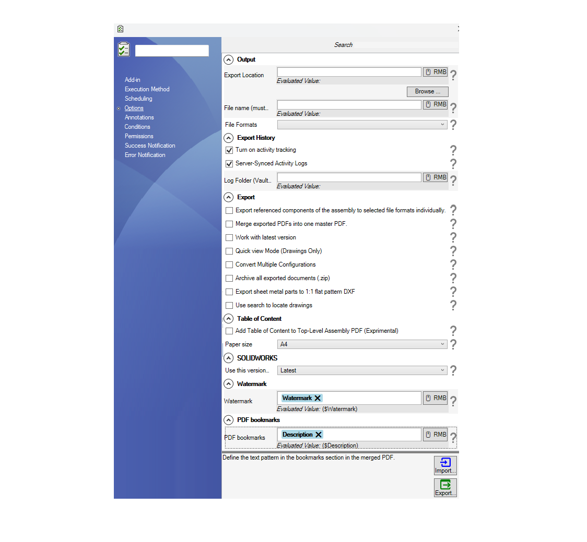
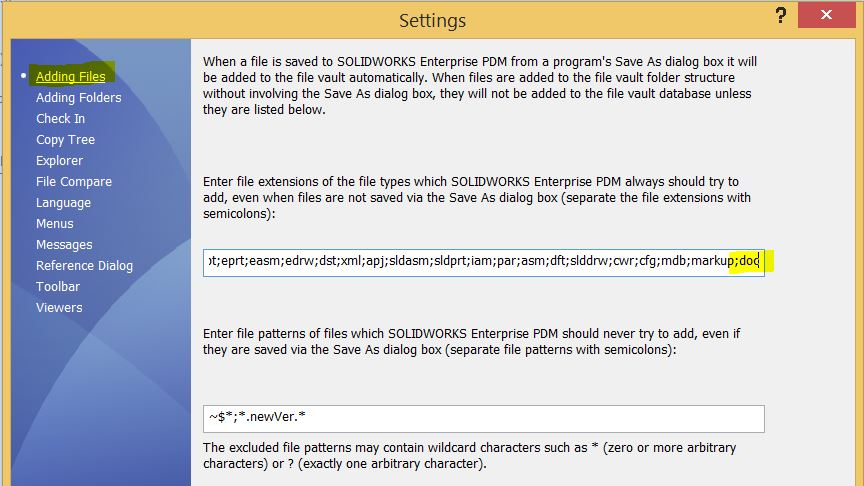

Options Setup Page
When you choose PDM Publisher from the dropdown in the new task dialog, you will be prompted a window that is similar to the one below:

| Option | Description |
|---|---|
| Output | This is where you specify the location and the filename where you want the exported documents to be saved. This location can be inside or outside the vault. |
| File Formats | This section specifies the file formats available for export. |
| Export History |
|
| Export |
|
| Table of Content |
|
| watermark | Add a watermark to the printed PDF. This watermark is an evaluated expression. You can include a mix of text and variables. |
Important Notes About Creating Tasks
Please consider the following recommendations when creating a new task using PDM Publisher:
- Execution method
- In the execution method tab that appears on the blue left sidebar, please:
- Choose the radio box option “Let the system decide which computer to execute the task“.
- Choose one computer. We recommend that our customers opt for the server. The server needs to have a SOLIDWORKS PDM Client installed with a local view as well as SOLIDWORKS 3D.
- On the first page of the task, execute the task with a user that has the right workflow and file/folder permissions.
Tip
We also recommend disabling the auto-add extensions by removing all the extensions the task uses including txt.
This prevents race conditions between SOLIDWORKS PDM and the task during files add process.
To change the auto-add extensions list,
- Go to the PDM Administration tool
- Right click on the username (or all users)
- Select Settings
- Click on the Adding Files selection and edit the file extensions
